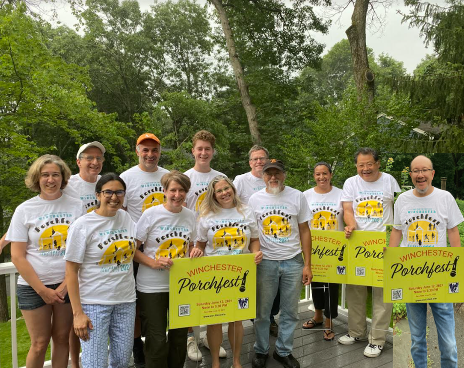

About
Porchfest is a Friends of Music initiative, organized and run by local volunteers, and funded in part by a grant from the Winchester Cultural Council and the Mass Cultural Council.
Your Winchester Porchfest Committee, aka "The PorchStars":
- Fred Yen (Winchester Farmers Market)
- Laurie Russell (Winchester Community Music School)
- George Gilmer (Winchester High School)
- Shukong Ou and Peter Pulsifer (Winchester Cultural Council)
- Salma Abounadi, Gina Altaras, Omar Baba, Shiva Barton, Catherine Curtis, Keith Doo, Susan Rozmanith (Civilians)
